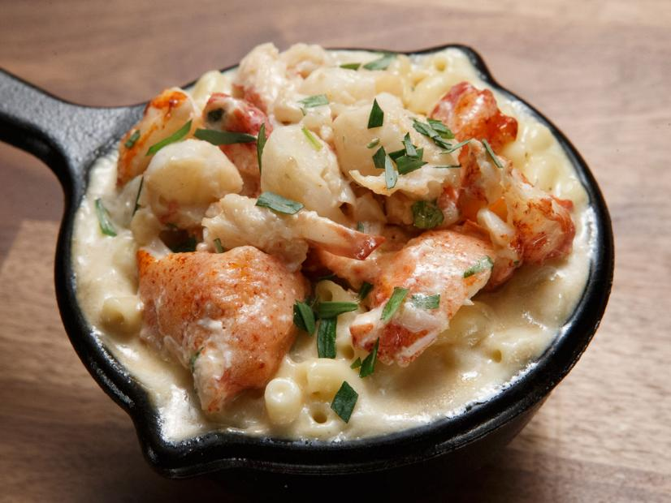

Lobster Mac and Cheese

Description
Indulge in a decadent symphony of flavors with our Lobster Mac and Cheese.
Succulent lobster chunks dance amidst creamy, velvety cheese sauce, creating a luxurious harmony that
elevates the classic comfort of mac and cheese to a gourmet masterpiece.
Ingredients:
Mac and Cheese:
- 1 pound elbow macaroni
- 4 cups heavy cream
- 3 cups of grated Gruyere cheese
- 1/2 cup finely grated Parmesan cheese
- 2 tablespoons Dijon mustard
- 2 teaspoons Worcestershire sauce
- ground black pepper
- Kosher salt
Lobster and Sauce:
- 2 pound of Lobster
- 3 tablespoons unsalted butter
- 1 minced shallot
- 2 tablespoons cognac
- 1 cup of shrimps stock
- 1/2 cups heavy cream
- juice of 1/2 lemon
- finely chopped chives
Directions:
- For the lobster an sauce: Bring a large stockpot filled three-quarters of the way with water to a rolling boil over high heat.
Add the lobsters to the pot, making sure that each lobster is completely submerged.
Cook the lobsters until they are bright red, about 8 minutes, then drain and set aside.
- For the mac and cheese: Add the 1 quart heavy cream, Parmesan, Dijon, Worcestershire, pepper and a pinch of salt
to a large skillet over medium heat.
Simmer gently, whisking until smooth. Add the Gruyere and turn off the heat.
Carefully stir and let melt. Taste for seasoning and stir occasionally until melted and smooth.
- Bring 4 quarts water to a rolling boil in a large pot over medium heat. Add salt and bring the water back to a boil.
Add the macaroni and stir with a wooden spoon to ensure the macaroni does not stick to the bottom of the pot.
Cook until the macaroni is still quite firm, about 7 minutes. Drain and transfer to a glass bowl. Add the cheese sauce and stir to combine; keep warm.
- Carefully remove the lobster meat from the tails, claws and legs, taking care to remove any cartilage from the claw meat.
Cut the meat into bite-size pieces, put in a medium bowl and then season with a pinch of salt. Discard the tail and body shells but keep the heads.
Cut the heads in half.
- For the lobster sauce: Melt 1 tablespoon butter in a medium skillet over medium-low heat. Add the shallots and cook until tender, about 4 minutes,
then add the head halves and steam in the shallot butter, about 3 minutes. Carefully add the cognac and cook down until there is very little liquid
left in the skillet, 2 to 3 minutes, then add the shrimp stock. Raise the heat to high and cook until reduced by about half, 3 to 4 minutes.
- Add the 1/2 cup heavy cream and the remaining 2 tablespoons butter. Stir to combine and return to a simmer until the butter melts, then remove from heat.
Add the lemon juice, then strain through a fine-mesh sieve into a bowl and add the chopped tarragon. Add the lobster and gently toss to fully coat.
Season to taste with salt.
- Fill serving bowls halfway with macaroni and cheese and top with the lobster and sauce. Repeat with another layer of macaroni and top with the remaining lobster and sauce.
Finish with a pinch of salt.